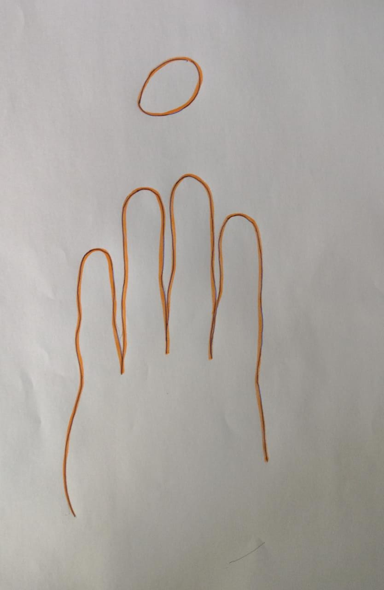

Orientar el desarrollo de las capacidades del alumno está máxima del currículo implica a menudo el riesgo permanente que conlleva el hecho de situarse en los límites de algunos paradigmas educativos de vivir en la frontera de hacer equilibrio sobre la cuerda floja de los prejuicios didácticos cuestionar nuestro propio criterio pedagógico y didáctico se puede convertir en un enfoque positivo de la docencia si aceptamos que incluso para enseñar aquello que es nuestra especialidad debemos aprender posiblemente la virtud y la base de la docencia no se hayan principalmente en saber sino además en desarrollar la capacidad de aprender sobre cómo aprenden cada alumno y cada alumna, como profesionales de la educación las profesoras y los profesores sabemos mas que nuestros alumnos acerca de los factores que ayudan a aprender y tenemos una buena base práctica sobre cómo enseñar.
En definitiva no se trata tanto de seguir mitificado a los dioses y a los genios musicales occidentales sino de formar personas tolerantes con lo que es diferente si bien es cierto que en occidente existe un patrimonio musical qué es necesario conocer también lo es que cuánta más música diferente estemos acostumbrados a escuchar más capaces debemos de entender nuestra propia música la educación musical tiene que empezar por aquello más próximo al niño y a la niña al mundo de sus sonidos y continuar a través del entorno inmediato que los jóvenes puedan percibir.
Aprendamos hacer Dactilorritmia
¿Utilizás la dactilorrítmia para trabajar los ritmos en clase? Yo la utilizo desde hace mucho tiempo y me va muy bien. hemos establecido como rutina trabajar los ritmos que aprendemos mediante esta técnica haciendo un juego muy sencillo: intentamos recordar cierto número de pulsaciones com ritmos que conocemos.
